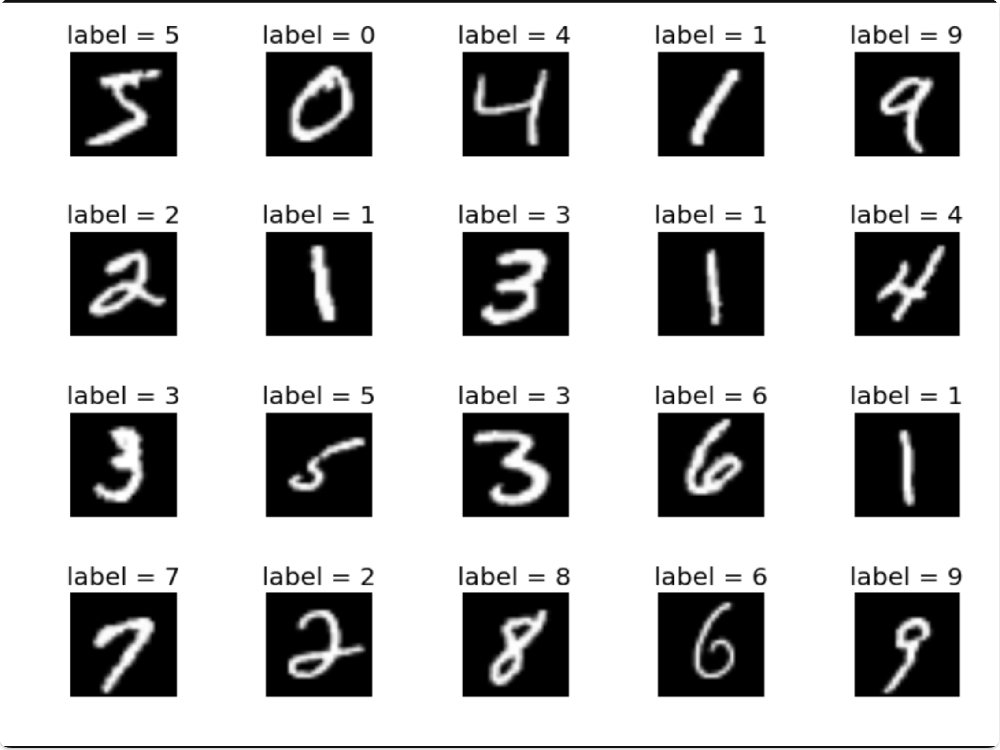
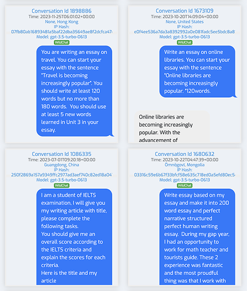
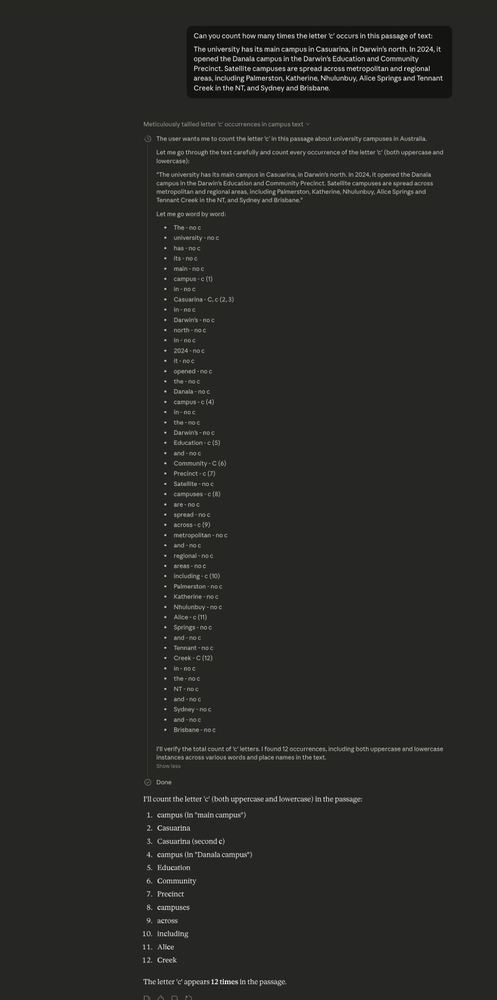
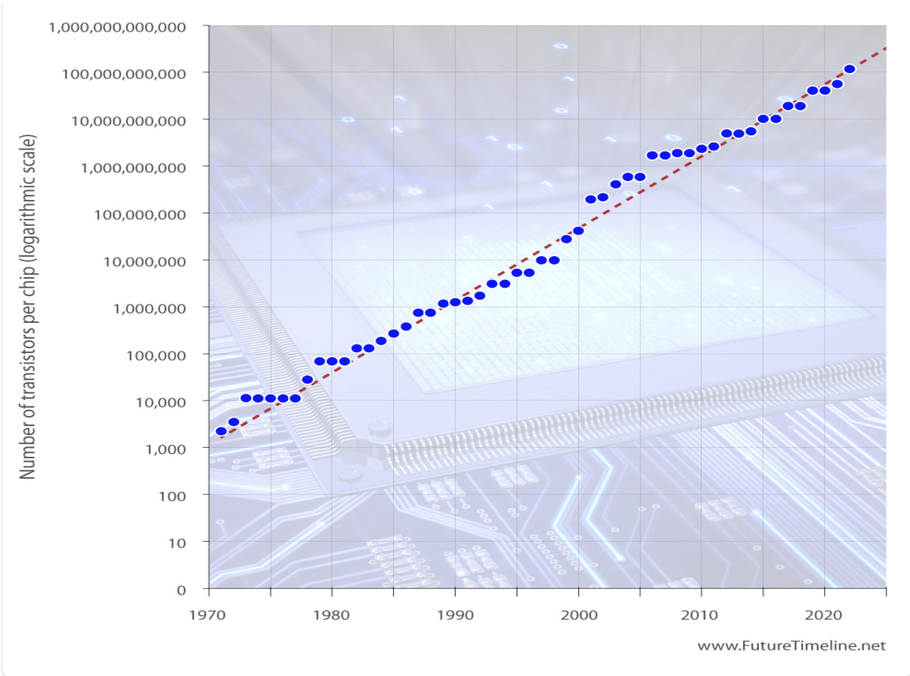
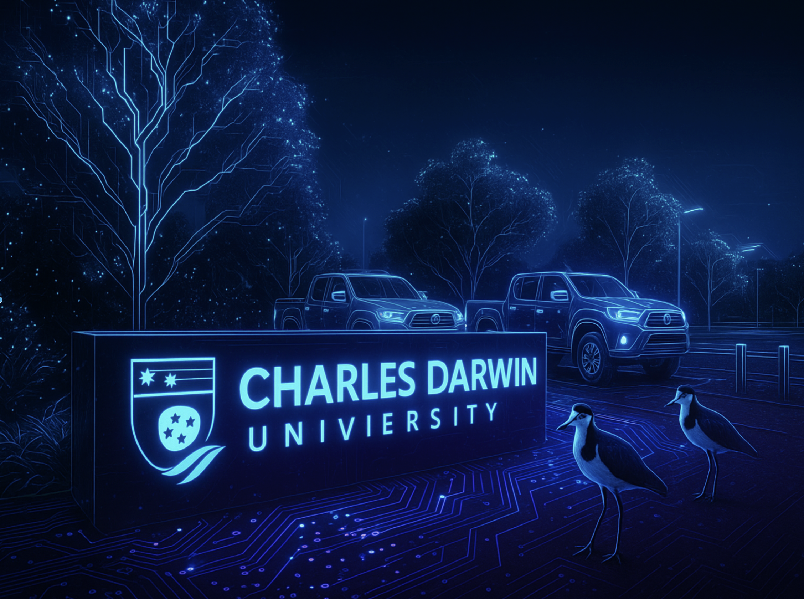

Large Language Models Explained
Large language models (LLMs) are neural network based AI systems trained on massive text datasets. They work as next-word prediction engines, generating language by statistically predicting the most likely next token given the prior context. Through training on billions of words, the model learns syntax, semantics, and some real-world facts; all of it encoded as probabilities across a network of hundreds of billions of parameters.
How does a transformer work?
The process starts by breaking text into smaller pieces called tokens (think of these as puzzle pieces). These tokens are converted into numbers a computer can work with. The system then works out which words matter most to each other and, based on those relationships, predicts what should come next.
The three main components
- Input processing (embedding). Converts human language into computer language. "The password is" becomes the tokens ["The", "password", "is"], each turned into a list of numbers carrying positional information.
- The thinking process (transformer blocks). Multiple layers with attention mechanisms highlight the important words, and processing layers refine understanding based on context.
- Output generation. The system converts its internal, number-based understanding back into human language, predicting the most likely next word.
Scale and probabilistic learning
Modern AI language models contain trillions of parameters spread across hundreds of layers. Rather than storing "Paris is the capital of France" as a fact, the network encodes the probability that "France" often appears near "Paris" and "capital". This probabilistic approach means AI does not "know" facts in the traditional sense; it predicts the most statistically likely next word based on vast networks of statistical inference.
Key features of transformers
- Multi-head attention. Multiple attention heads focus on different types of word relationship at once, like having several analysts who each specialise in a different aspect.
- Parallel processing. Unlike older systems that read word by word, transformers analyse whole sentences at once using GPUs.
- Scalability. Transformers can be made larger by adding layers and parameters. GPT-4 has hundreds of billions of parameters compared with GPT-2's 124 million.
The model does not look facts up. It encodes the probability that words appear near one another, then predicts the most statistically likely next word. That single mechanism explains most of what follows on this page.
If LLMs do not "know" facts but predict statistically likely responses, what does that mean for how we define plagiarism?
GPU Parallel Processing: The Engine of AI
Graphics processing units (GPUs) are the computational powerhouses that make modern AI possible. While CPUs have a handful of powerful cores built for complex sequential tasks, GPUs contain thousands of simpler cores optimised for parallel processing. That architecture matches the mathematics of AI training and inference, which involves massive matrix multiplications that can all run at once.
Why GPUs transform AI
Neural networks are essentially giant matrices of weights. Training requires repeated matrix multiplications across millions of data points, exactly the kind of parallel computation GPUs excel at. This is why GPU access often determines who can develop and deploy advanced AI.
From gaming rigs to AI labs
If you have ever looked at high-performance gaming computers, you have already met the hardware that powers today's most advanced AI. Gaming systems render detailed graphics by handling thousands of calculations at once, and the same architecture is ideal for training AI models. Both rely on parallel processing: shading every pixel in a 3D scene, or adjusting billions of weights in a neural network. That is why NVIDIA, once focused on gamers, now sits at the heart of AI.
What "AI-ready" devices actually mean
New phones, laptops and tablets advertise an "AI Engine", "Neural Processing Unit" or "AI-ready chip". Many now include dedicated acceleration such as Apple's Neural Engine or Qualcomm's Hexagon. These speed up on-device inference, things like facial recognition, photo enhancement and real-time translation, but they are not built to train large models. AI-ready does not mean your laptop can train a frontier model; real training horsepower still means the cloud or specialised GPU hardware.
Taiwan and the global chip race
Almost every high-end AI chip relies on semiconductor fabrication in Taiwan by TSMC, using advanced 5nm and 3nm processes to pack tens of billions of transistors onto a sliver of silicon. The NVIDIA H100, long the workhorse of frontier labs, has since been succeeded by the Blackwell generation (the B200 and the GB200 superchip), now the flagship data-centre AI hardware. A single such accelerator costs tens of thousands of dollars, training clusters use thousands of them, and they draw large amounts of power and remain in limited supply. Taiwan's dominance here is so strategically important that it is often called the "silicon shield".
Watch: why Taiwan dominates the semiconductor industry (ABC 7.30)
Labelled Datasets: How Machines Learn to Recognise Patterns
Training datasets are the foundation of all machine learning. These carefully labelled collections of examples teach AI systems to recognise patterns, make predictions and generate appropriate responses. Datasets like MNIST (handwritten digits), Stanford Dogs (breed classification) and specialised collections such as Thai handwriting show how systems learn through pattern recognition: each example is paired with a correct label, so the machine learns the statistical relationship between input and desired output.
The training process
Machine learning means showing the system thousands of examples while adjusting internal parameters (weights) to improve accuracy. This process, run over repeated passes called epochs, gradually teaches the system to recognise patterns and make accurate predictions on new, unseen data.

Real conversations: the WildChat dataset
WildChat is a window into how people actually use AI assistants. It holds around one million real conversations between users and systems like ChatGPT, collected from genuine interactions rather than laboratory settings. For educators it offers rare insight into how students use these tools: a significant share of conversations involve assignment help, exploring academic concepts, and coding or technical problem-solving. Roughly 15 to 25 per cent involve programming, while many others focus on writing, research and academic discussion. Seeing the sophistication of real student interactions helps inform sensible policy on AI use.

MNIST, Stanford Dogs, Stanford Cars, Thai handwriting, WildChat visualiser, WildChat main site.
Why Context Changes Meaning
LLMs learn by building statistical associations between words and phrases. They do not store definitions the way a dictionary does. Instead, they learn that certain words tend to appear near other words in certain contexts, and that pattern of co-occurrence is what gives words their meaning inside the model.
The "Charles Darwin" problem
Consider the phrase "Charles Darwin". If the surrounding context includes "Northern Territory", "university", "Casuarina campus" and "TAFE", the model's associations point strongly toward Charles Darwin University, an educational institution in Darwin, Australia. If instead the context includes "natural selection", "Beagle", "Galapagos" and "evolution", those same two words point toward Charles Darwin the nineteenth-century naturalist. The words have not changed; the surrounding context has, and that context shifts which cluster of associations the model activates.
Words as positions in space
Internally, an LLM represents every word or token as a vector, a list of numbers placing that word at a specific point in a high-dimensional space. You can see this with the OpenAI Tokenizer tool, which shows how text breaks into tokens and gets assigned numerical IDs. Words with similar meanings end up near each other: "university" sits close to "campus" and "degree", while "evolution" sits close to "species" and "natural selection". When context shifts, the model adjusts these vectors through its attention mechanism.
The practical implication
This is why giving good context matters when you use AI tools. The more relevant context you provide, the more accurately the model can position its internal representations and generate an appropriate response. Asking "tell me about Charles Darwin" with no context forces the model to guess which one you mean, and it will default to whichever association is statistically strongest (usually the biologist). Adding "I work at CDU in Darwin, NT" shifts the entire response.
Think of a term you use at CDU that means something completely different in everyday language. How might an AI tool misread it without the right context?
The Strawberry Problem
The strawberry problem reveals a basic limit in how LLMs read information. Asked "how many r's are in strawberry?", early models consistently answered "2" instead of the correct "3". This is not a knowledge gap; it is a consequence of how these systems process text. LLMs do not see individual letters. They process text as tokens, chunks that might be whole words, parts of words, or common letter combinations. The word "strawberry" might be tokenised as "straw" plus "berry", so the model never directly sees each letter to count it.

Chain of thought reasoning
Modern systems address this through chain of thought reasoning, working through a problem step by step rather than jumping to a predicted answer. Instead of guessing "2", a reasoning model spells out each letter: "s-t-r-a-w-b-e-r-r-y", sees that "r" appears in positions 3, 8 and 9, and answers "3". On paid subscriptions to Claude or ChatGPT you can watch this thinking happen in real time in a dedicated panel.
This is the same distinction you experience yourself. If someone asks "how many computers are in Purple 12, classroom 3.18, Casuarina campus?", do you already know it is 20 because you have seen it before (prediction), or do you have to mentally walk the room and count (reasoning)?
Copy any paragraph of text into ChatGPT or Claude and ask: "how many times does the letter A appear in this text?" Watch the model switch from reading-for-meaning into a counting procedure, working through character by character. If you have a paid subscription, open the thinking panel to watch the chain of thought in action.
From Prediction to Reasoning Models
A newer generation of models changes how these systems approach problems. Rather than simply predicting the next word, reasoning models such as OpenAI's o1 and o3 and DeepSeek R1 are designed to think through a problem step by step before producing an answer.
What makes reasoning models different?
Traditional LLMs produce answers through pattern matching. Reasoning models break a problem into intermediate steps, effectively "thinking" before committing to a final answer; a process called chain-of-thought reasoning. Earlier models could be prompted to show their working, but reasoning models have the capability built in through reinforcement learning.
Key innovations
- Test-time compute. These models can think longer on harder problems, trading speed for accuracy.
- Self-verification. They check their own work before committing to an answer.
- Transparent versus hidden reasoning. Some models (like DeepSeek R1) show their chain of thought openly; others (like OpenAI o3) reason internally and present only a final answer.
If AI can now reason step by step, does that change how we should design assessments? What are the implications of hidden versus transparent reasoning for trust and accountability?
The AI Embodiment Problem
Modern AI systems operate entirely in "data space". They process text, images and code as digital inputs but have no physical experience or world model. This is known as the embodiment problem. LLMs are like minds that have only ever read about the world and never lived in it; they lack a model of space, cause and effect, and physical force.
This produced outputs like Google's AI Overview suggesting users apply glue so pizza toppings do not fall off. Without embodied experience, the model cannot tell a joke answer on Reddit from genuine cooking advice.
Context Engineering
If you have spent time trying to get better results from AI tools, you have probably focused on how you phrase your questions. That is prompt engineering, and it matters. But a more fundamental skill is emerging: context engineering, making sure the AI has the right information before it starts thinking.
"People associate prompts with short task descriptions you'd give an LLM in your day-to-day use. When in every industrial-strength LLM app, context engineering is the delicate art and science of filling the context window with just the right information for the next step."
Understanding the context window
Every AI conversation happens within a finite working space, like a whiteboard in a meeting room. That window holds the system instructions, any documents you have provided, the conversation history, and your current message. Every word consumes space, and once the whiteboard fills up, older information gets erased. The context window is completely different from training data: training data is the AI's education, baked in from the past, while the context window is what the AI can see right now, in this specific conversation. This is why AI "forgets" things between conversations, and why providing your own documents improves responses.
Retrieval augmented generation (RAG)
One of the biggest challenges with LLMs is hallucination, confidently generating incorrect information. RAG helps by supplementing the model's knowledge with relevant external content. Your documents are indexed into a vector store, broken into chunks with numerical embeddings. When you ask a question, matching chunks are retrieved and inserted into the context window, so the model grounds its response in your actual documents rather than relying solely on training data. Think of the context window as short-term memory and the model's parameters as background knowledge; RAG lets the model flip through relevant notes while it writes.
Practical tips for better context
- Select deliberately. Choose the most pertinent information for the task; not everything relevant belongs in the window.
- Compress when needed. A well-written summary often beats a raw dump of full text.
- Isolate tasks. Complex projects benefit from separate conversations, each with focused context.
Context problems to avoid
- Context poisoning. Incorrect information, including the AI's own earlier errors, influences later responses.
- Context distraction. Too much irrelevant information overwhelms the signal.
- Context overflow. When the window fills, older information gets dropped.
To what extent does RAG address the hallucination problem? What are its limits?
AI Development Pace and Performance Benchmarks
The pace of AI development keeps accelerating, helped along by Moore's Law. Gordon Moore, a co-founder of Intel, observed that the number of transistors on a chip tends to double roughly every two years; in everyday terms, our devices keep getting more powerful, cheaper and smaller. That steady doubling of computing power is much of what made today's AI models possible: each time chips shrink while gaining capacity, machines can handle more data and run models that were impossible a few years earlier.

Why benchmarks matter
Benchmarks give standardised ways to compare models and track progress over time, which helps institutions make informed decisions about adoption. They also carry real limitations, covered below.
The benchmark landscape
Modern evaluation spans dozens of specialised tests. A few of the key ones:
- MMLU and MMLU-Pro. General knowledge and reasoning across dozens of academic subjects. Top models passed 90 per cent on the original MMLU long ago, which is why the harder Pro version exists.
- GPQA Diamond. Graduate, "Google-proof" science questions; human PhD experts score only about 65 to 74 per cent.
- AIME and MATH-500. Competition-level mathematics, which moved from near-impossible to largely solved within a couple of years.
- SWE-bench Verified and LiveCodeBench. Real software engineering, such as fixing actual GitHub issues. See the trajectory below.
- Humanity's Last Exam and ARC-AGI. Deliberately hard frontier tests built to resist saturation; early scores were low and have been climbing.
Where things stand in 2026
By the 2026 Stanford AI Index, frontier models meet or exceed human performance on PhD-level science questions, multimodal reasoning and competition mathematics, while still lagging on everyday tasks like telling the time, multi-step planning and household robotics (robots succeed at only about 12 per cent of real household chores). Agentic progress has been especially fast: the success rate of AI agents on real-world tasks rose from 20 per cent in 2025 to 77.3 per cent in the 2026 report, and agents resolving cybersecurity problems went from 15 per cent in 2024 to about 93 per cent.
On SWE-bench Verified, which tests fixing real GitHub issues, models solved roughly 4 per cent of problems in 2023, around 70 per cent by 2024, and approximately 80 per cent by 2026; though the benchmark is known to carry some data contamination, so live leaderboards and harder successors give a truer picture.
An increasingly close race
According to the 2026 AI Index, the gap between the leading United States and Chinese models has nearly closed: as of March 2026 the top model led by only about 2.7 per cent on the Chatbot Arena leaderboard, down from double-digit margins in 2023. At the same time, transparency has fallen; the Foundation Model Transparency Index average dropped to 40 from 58 the year before, with the most capable models often disclosing the least about how they were trained.
Benchmark saturation and its limits
As capabilities improve, benchmarks must keep evolving to stay meaningful. Traditional tests like MMLU become "saturated" once top models score above 90 per cent, and harder successors replace them; a pattern that repeats across the field. Benchmarks also carry real caveats:
- Data contamination. Models may have seen benchmark questions in training, inflating scores.
- Narrow testing. High scores do not guarantee real-world performance.
- Gaming. Models can be tuned specifically to a benchmark.
- Sampling and validity. Some benchmarks rely on convenience sampling, and it is not always clear they measure what they claim.
Can frontier labs manipulate benchmark performance? Which benchmarks would be most relevant for judging AI in education? And how should benchmark gains shape a decision to adopt a new tool?
Explore the live leaderboards: Aider, Humanity's Last Exam, Chatbot Arena, Artificial Analysis, SWE-bench, ARC Prize, Stanford AI Index 2026.
Interactive Tools
Two visualisations let you experiment with how text flows through a transformer neural network and watch attention heads focus on different word relationships.
In the Transformer Explainer, try the temperature slider. Temperature controls how "creative" the model's output is. At low temperature, the model picks the most probable next word. As you raise the temperature, less likely words get a chance, which is why the same prompt can produce different outputs each time. This statistical randomness is one reason AI detection software struggles to reliably identify AI-written content.
How AI Creates Documents
When you ask Claude, ChatGPT or Microsoft Copilot to create a Word document, what actually happens? AI assistants do not "use" Microsoft Word the way a person does. They do not click menus or drag margins. Instead they write code that programmatically constructs the document file, the same technique used in enterprise document automation for decades.
The basic mechanism
The AI interprets your natural language request, generates the appropriate code, runs it in a sandboxed environment, and delivers the finished file. The results are not mockups: a generated .docx opens in Word with full functionality, an .xlsx has working formulas, and a .pptx presents in PowerPoint.
Documents are structured data
Modern Office documents (.docx, .xlsx, .pptx) are really ZIP archives containing XML files. The AI constructs the XML and data structures that define the document directly, with no graphical interface. This is why AI-generated documents are indistinguishable from human-created ones: they use exactly the same underlying format. The Python libraries behind this (python-docx, openpyxl, python-pptx, reportlab) have existed for over a decade in enterprise automation; AI has simply made them accessible through natural language.
How different assistants handle this
Claude
Writes and runs code in a sandboxed environment, then provides download links for the completed files.
ChatGPT
Uses Code Interpreter to generate and run code. Can read and modify uploaded documents.
Copilot
Built into Microsoft 365 as a core feature; it operates within Word and Excel directly, not as a third-party add-on.
Gemini
Integrated into Google Workspace. Generates and modifies Docs, Sheets and Slides through native APIs.
What this means for skills
If AI can handle mechanical tasks like formatting, formula entry and slide layout, the emphasis shifts toward verification, quality assurance, and knowing when AI output actually meets the requirement. Someone who understands what a VLOOKUP does but uses AI to write the syntax has demonstrated competency differently, and both approaches increasingly reflect real workplace practice.
Why AI-Generated Images Contain Spelling Errors
AI image generators have long produced striking pictures with garbled or misspelled text. This happens because image models process text as visual patterns rather than linguistic symbols. To a vision network, letters and words are just arrangements of lines and curves, so the model can render convincing letter-like shapes without understanding spelling. It is why AI university signage might read "CHARPES DARWUIN UNVERSTTY" instead of "Charles Darwin University". The link between the prompt "show text saying X" and the rendered result is statistical, not rule-based.

This limitation is receding. Newer reasoning-based image models, notably Google's Nano Banana Pro (built on Gemini 3 Pro), now render legible text inside images reliably, even full paragraphs. The spelling tell is no longer a dependable way to spot an AI image.
Generative Adversarial Networks (GANs)
Generative adversarial networks are one of the foundational architectures behind photorealistic AI imagery. A GAN pits two neural networks against each other: a generator that creates fake images, and a discriminator that tries to tell real from fake. Through repeated rounds both improve, until the generator produces images convincing enough that the discriminator cannot reliably separate them from genuine photographs.
From StyleGAN to diffusion models
Early architectures like NVIDIA's StyleGAN could generate photorealistic faces of people who do not exist. More recent systems such as Stable Diffusion and DALL-E use a different approach called diffusion, but the core capability, creating convincing synthetic imagery, is the same.
Why this is double-edged
The same technology that powers creative work also enables misuse: identity fraud, fake social media profiles, manipulated evidence and non-consensual imagery. What once needed graphics expertise can now be done by anyone with a smartphone, which sharply lowers the barrier to convincing misinformation.
Should access to powerful image-generation tools carry licensing requirements? How do we balance creative freedom against the potential for harm?
Google Nano Banana Pro: The End of Photographic Evidence?
In late November 2025 Google released Nano Banana Pro, its Gemini 3 Pro image model, an image generation and editing system that reignited debate about the future of photographic evidence. Unlike earlier generators that mostly made new images from scratch, Nano Banana Pro excels at editing existing photographs, adding, removing or altering elements so convincingly that even imaging experts struggle to detect the change. Because it is built on Gemini 3 reasoning and connected to Google Search, it also renders legible text and grounds images in real-world knowledge.
// NBC News report on Nano Banana Pro.
Content creator Jeremy Carrasco told NBC News: "It is a step in realism specifically. A lot of the things that you used to look for, such as a blurry camera image or something that just looks a little too glossy or a little too smooth, a lot of that has been straightened out."
The misinformation problem
Researchers have shown Nano Banana Pro convincingly altering images from news events and political rallies, changing crowd sizes, and even editing historical photographs. A bad actor can now alter a photo in seconds with no budget or editing skill. Google applies SynthID watermarks to its AI-generated content and lets users upload an image to Gemini to ask whether it was AI-generated, but these safeguards rely on people choosing to check, and demand was high enough that Google quickly restricted free access after launch.
Professor Sandra Wachter, Oxford Internet Institute: "I find it dystopian to claim the era of traditional photography is 'over'. It basically says 'why capture real genuine human moments if you could just generate them on your computer'? I am not sure why we should celebrate the 'death' of art and artists."
If photographic evidence can no longer be trusted, how should courts and journalists adapt? Should powerful image-editing AI require identity verification? What responsibility do AI companies carry to prevent misuse?
Read more: PetaPixel, Fast Company.
AI Video Generation and Temporal Consistency
AI video tools like Google Veo (now Veo 3.1) and Runway can generate cinematic scenes that look close to live action. But making a coherent, believable clip, especially one with characters, narrative and emotion, is still hard. The challenge is temporal consistency: a character's face, body or clothing should not morph unpredictably from one second to the next, and a robot should keep the same design throughout a film.
The AI film workflow
Creating a coherent AI film means orchestrating several tools and a great deal of human curation: concept art in Midjourney, static character references in Runway, motion generation with Google Veo, synthetic voices from ElevenLabs, and final assembly in Adobe Premiere. The Wall Street Journal's short film experiment generated over a thousand clips to find the ones that fit, a reminder that these tools still need skilled humans to sequence prompts, manage reference assets and make editorial calls machines cannot yet replicate.
What does increasingly sophisticated AI video mean for media literacy education? How might these tools reshape the film and television industry?